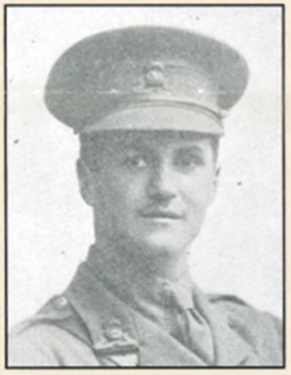
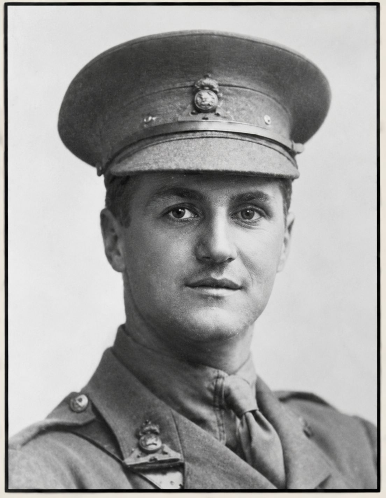

Eric Hamilton Fryer


Eric Hamilton Fryer was born in Wembley in 1896 and after attending John Lyon School worked as an estate agent’s clerk before the First World War, later enlisting and serving as a lieutenant with the Lancashire Fusiliers. He was killed in France on 3 August 1916, aged about 20, reportedly being shot by a German sniper.
Civilian Life - Eric Hamilton Fryer was born in Wembley in 1896, the son of George W. and Annie J. Fryer. After attending John Lyon School, he worked as an estate agent’s clerk. In 1911, he was living with his family at Mentmore, Sudbury, Harrow, where his father worked as an accountant for a house furnisher. Eric had two brothers, Henry N. and George R. Eric attended John Lyon School, and his name is recorded on the school's First World War Roll of Honour.
Military Life - He appears to have enlisted in the Honourable Artillery Company on 4 August 1914, although the research notes that the surviving evidence is not conclusive. The Commonwealth War Graves Commission records him as Lieutenant Eric Hamilton Fryer of the 4th Battalion, Lancashire Fusiliers, attached to the 2nd/5th Battalion. This is entirely feasible as many young men enlisted in a local unit first and upon receiving their commission were assigned to a unit that needed more officers. Fryer was killed in France on 3 August 1916 in the second month of the Somme Offensive. The research from the John Lyon School records that he was killed by a German sniper from the opposing 127th Württemberg Regiment. The account also records the recollection of fellow officer Captain Best Dunkley, who described Fryer as a “brother” and recorded the effect of his death on his comrades.
He was aged almost 20 at the time of his death and is commemorated on the Thiepval Memorial on the Somme. His name is also recorded on the war memorials at St John the Evangelist Church in Wembley, St Andrew's Church, Sudbury, and John Lyon School.